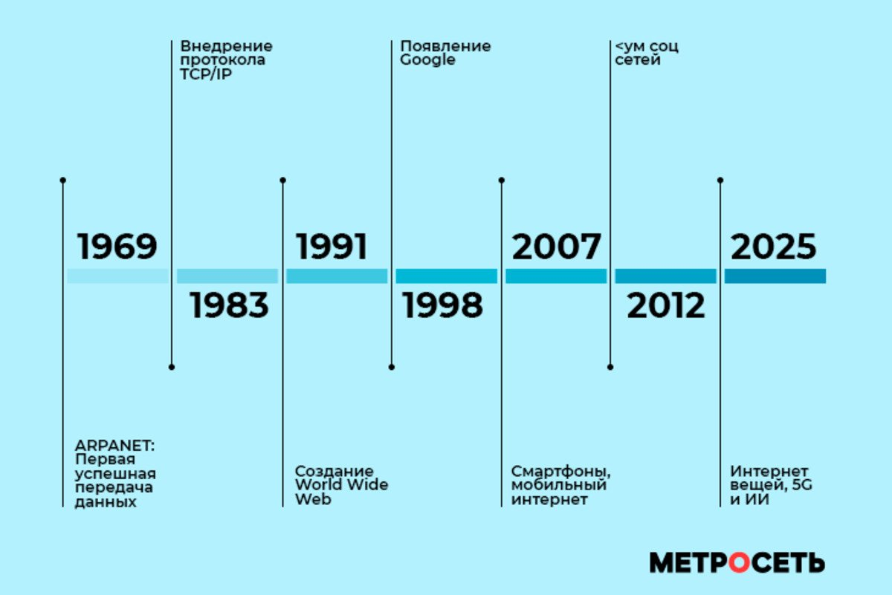

Добро пожаловать в NetHistory
Этот сайт расскажет об истории развития интернета - от первых идей XIX века до современности. Вы узнаете, как появились первые компьютерные сети, как был придуман протокол TCP/IP, кто создал Всемирную паутину и как интернет стал частью повседневной жизни миллиардов людей.

Что такое интернет
Интернет - это глобальная сеть компьютеров, соединённых между собой. Слово «интернет» происходит от internetwork - «объединение сетей». Это не одна большая сеть, а множество сетей, которые соединены и могут обмениваться данными друг с другом.
Сегодня через интернет работают, учатся, общаются, платят за покупки, смотрят видео и управляют устройствами. Без него невозможно представить современный мир - но так было не всегда. Интернет прошёл долгий путь от военного проекта до глобальной инфраструктуры.
Что вы найдёте на сайте
- 1830–1960 - предыстория: телеграф, первые вычислительные машины, идея глобальной сети.
- ARPANET - первая компьютерная сеть и её первые четыре узла.
- TCP/IP - протоколы, на которых работает весь современный интернет.
- WWW - Всемирная паутина Тима Бернерса-Ли и первый сайт.
- WEB 1.0 - эпоха статичного веба, первые браузеры.
- WEB 2.0 - соцсети, блоги, интерактивность.
- Современность - мобильный интернет, облака, IoT, ИИ.
Хронология ключевых событий
Ниже - краткая хронология самых важных дат в истории интернета.
| Год | Событие | Значение |
|---|---|---|
| 1969 | Запуск ARPANET | Первая компьютерная сеть |
| 1974 | Идея TCP/IP | Серф и Кан описали единый протокол |
| 1983 | Переход ARPANET на TCP/IP | «День рождения» современного интернета |
| 1989 | Идея WWW | Тим Бернерс-Ли предложил Всемирную паутину |
| 1991 | Первый сайт | Запущен info.cern.ch |
| 1993 | Браузер Mosaic | Первый графический браузер |
| 1998 | Появление Google | Новый способ поиска информации |
| 2007 | Запуск iPhone | Начало мобильной эпохи интернета |
| 2019 | Запуск 5G | Гигабитные скорости в мобильной сети |
Видео об истории интернета
Ниже - документальный ролик об истории развития интернета.